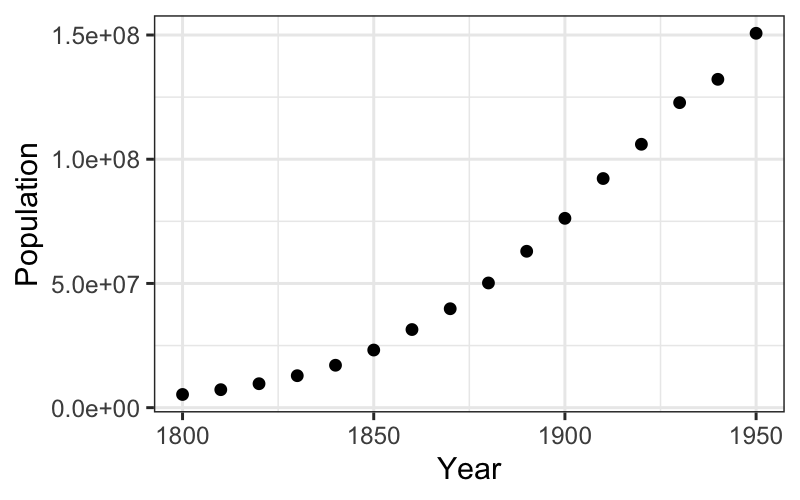
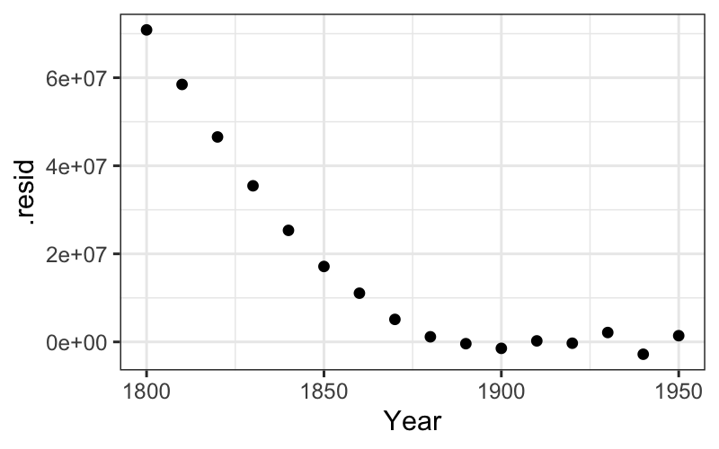
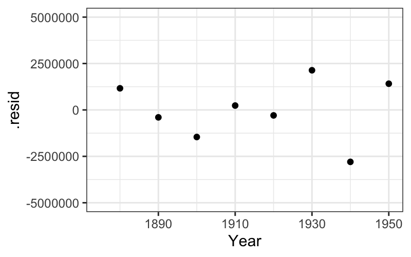
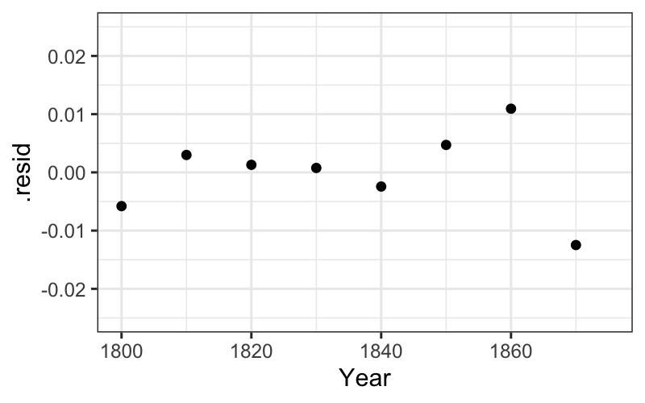
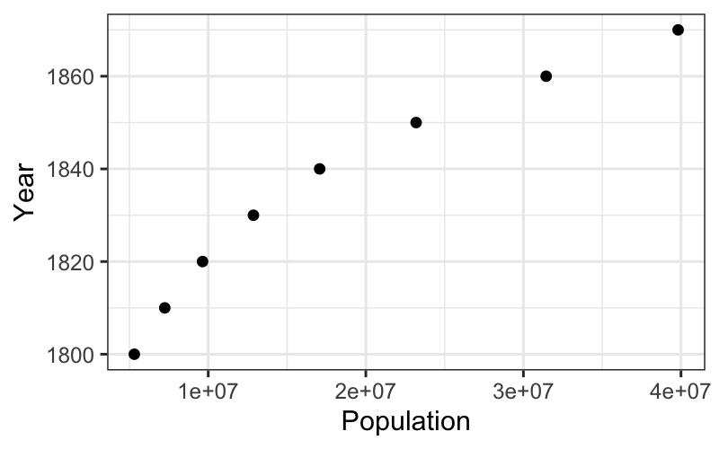
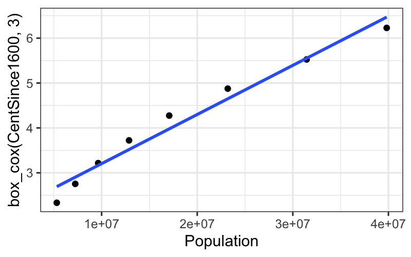
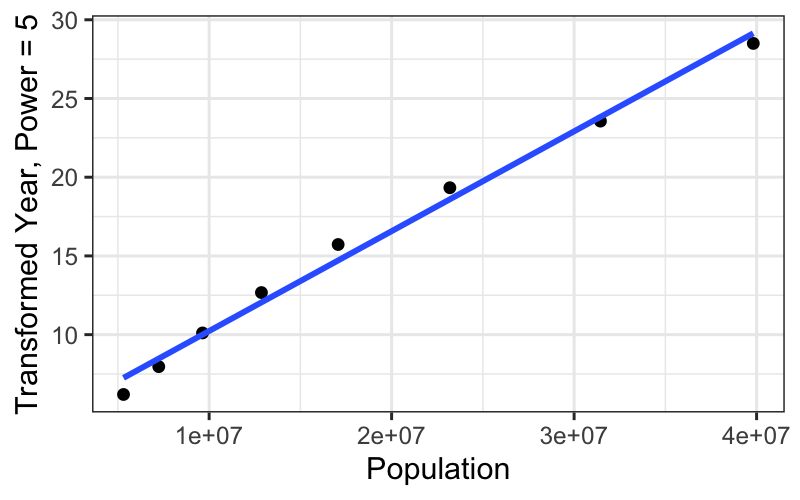

Stat 470/670 Lecture 7: Bivariate data
Julia Fukuyama
February 9, 2021
Today: Bivariate data
Optional reading: Tukey, Exploratory Data Analysis, Chapter 5, introduction and sections D-H, and Chapter 6 (posted on the website).
Read Chapter 5 more for the philosophy than for the implementation details.
In particular, Tukey fits lines by eye (sections A-C in Chapter 5), which we will never do.
Motivation/What questions do we want to answer?
Recall the EDA philosophy: We want to notice as many things as possible about the data, collect all appearances.
For univariate data, collecting all the appearances meant looking at the distributions of the numbers: their center, spread, skewness, outliers, whether they seem to come from standard distributions.
For bivariate data, we will want to know about the relationship between the variables. Because this is EDA, we want to explain the relationship between the variables, and we want the explanation to be as simple as possible (but no simpler).
The simplest explanation for the relationship between two variables is linear, so today we will look at
How to fit a linear relation
How to transform variables so as to create a linear relation
How to critique the linear relation once we have it
Scatterplots
A first example: US Census data, 1800-1950
The dataset provided has census data from 1790 to 2010. We want to reproduce Tukey’s analysis, so we will just use 1800-1950.
## ── Attaching packages ─────────────────────────────────────── tidyverse 1.3.0 ──
## ✔ tibble 3.0.1 ✔ dplyr 1.0.2
## ✔ tidyr 1.1.0 ✔ stringr 1.4.0
## ✔ readr 1.3.1 ✔ forcats 0.5.0
## ✔ purrr 0.3.4
## ── Conflicts ────────────────────────────────────────── tidyverse_conflicts() ──
## ✖ dplyr::filter() masks stats::filter()
## ✖ dplyr::lag() masks stats::lag()
census_full = read_csv("../../datasets/census.csv")
## Parsed with column specification:
## cols(
## Year = col_double(),
## Population = col_double()
## )
census = subset(census_full, Year >= 1800 & Year <= 1950)
## How would you write this with a pipe instead?
Let’s start off with a scatterplot:
ggplot(census) + geom_point(aes(x = Year, y = Population))

What do we learn about the census numbers from the scatterplot?
We can check on the multiplicative hypothesis by plotting on a log scale:
ggplot(census) + geom_point(aes(x = Year, y = Population)) +
scale_y_log10()
The trend in the first half does look quite linear on the log scale.
What next?
The scatterplot gives us a rough idea or a first hypothesis about the form the data come in.
We’re not done though: We want to check how well the linear hypotheses fit, and we want to “go one level deeper” and examine the deviations from the line.
To do this, we need to find a best fitting line and examine the deviations from that line.
Linear models/Best fitting line
You remember from your linear models class the statistical interpretation of least squares: it is a maximum likelihood estimate in the model \(y_i = \beta_0 + x_i\beta + \varepsilon_i\), \(\varepsilon_i \sim \mathcal N(0, \sigma^2)\).
“Least squares” reminds us that there is another interpretation of the same line: it minimizes the sum of squared residuals.
Checking the linearity of our relationship
Let’s check on the appearance of linearity in the latter half of the data. To do this, we first get the least squares fit on the second half of the data using lm in R.
To fit on just half the points, we can use sample weights in the lm function. Below, these weights are created with mutate. Note that as.numeric on a boolean vector changes FALSE to 0 and TRUE to 1.
(midpoint = median(census$Year))
## [1] 1875
census = census %>% mutate(late = as.numeric(Year >= midpoint))
fit_late = lm(Population ~ Year, data = census, weights = late)
Side note: if you’ve ever tried to programmatically get information out of the lm object, you’ll remember what a pain it is. The broom package (“broom: Let’s tidy up a bit”) has three functions that give you coefficients, fits and residuals, and model fit information as tibbles. No more summary(fit)$r.squared calls!
library(broom)
tidy(fit_late)
## # A tibble: 2 x 5
## term estimate std.error statistic p.value
## <chr> <dbl> <dbl> <dbl> <dbl>
## 1 (Intercept) -2643679502. 51422012. -51.4 0.00000000363
## 2 Year 1432289. 26850. 53.3 0.00000000291
## # A tibble: 16 x 10
## Population Year X.weights. .fitted .se.fit .resid .hat .sigma .cooksd
## <dbl> <dbl> <dbl> <dbl> <dbl> <dbl> <dbl> <dbl> <dbl>
## 1 5308483 1800 0 -6.56e7 3.15e6 7.09e7 0.417 1.78e6 0.274
## 2 7239881 1810 0 -5.12e7 2.89e6 5.85e7 0.274 1.89e6 0.0137
## 3 9638453 1820 0 -3.69e7 2.62e6 4.66e7 0.179 1.77e6 0.0929
## 4 12866020 1830 0 -2.26e7 2.36e6 3.55e7 0.131 1.90e6 0.00159
## 5 17069453 1840 0 -8.27e6 2.11e6 2.53e7 0.131 1.90e6 0.00248
## 6 23191876 1850 0 6.06e6 1.85e6 1.71e7 0.179 1.59e6 0.199
## 7 31443321 1860 0 2.04e7 1.60e6 1.11e7 0.274 1.22e6 0.671
## 8 39818449 1870 0 3.47e7 1.36e6 5.12e6 0.417 1.72e6 0.404
## 9 50189209 1880 1 4.90e7 1.12e6 1.16e6 0.417 1.78e6 0.274
## 10 62947714 1890 1 6.33e7 9.11e5 -4.00e5 0.274 1.89e6 0.0137
## 11 76212168 1900 1 7.77e7 7.35e5 -1.46e6 0.179 1.77e6 0.0929
## 12 92228496 1910 1 9.20e7 6.30e5 2.35e5 0.131 1.90e6 0.00159
## 13 106021537 1920 1 1.06e8 6.30e5 -2.94e5 0.131 1.90e6 0.00248
## 14 122775046 1930 1 1.21e8 7.35e5 2.14e6 0.179 1.59e6 0.199
## 15 132164569 1940 1 1.35e8 9.11e5 -2.80e6 0.274 1.22e6 0.671
## 16 150697361 1950 1 1.49e8 1.12e6 1.41e6 0.417 1.72e6 0.404
## # … with 1 more variable: .std.resid <dbl>
## # A tibble: 1 x 11
## r.squared adj.r.squared sigma statistic p.value df logLik AIC BIC
## <dbl> <dbl> <dbl> <dbl> <dbl> <int> <dbl> <dbl> <dbl>
## 1 0.998 0.998 1.74e6 2846. 2.91e-9 2 -125. 256. 257.
## # … with 2 more variables: deviance <dbl>, df.residual <int>
Back to plots: we want to plot two layers, one with the linear smoother and one with the best fitting line.
ggplot(census) + geom_point(aes(x = Year, y = Population)) +
geom_abline(aes(intercept = estimate[1], slope = estimate[2]), data = tidy(fit_late))
We see that the line does a good job of explaining the later population numbers, although it is not perfect. We want to look at these more closely.
Residuals: Critiquing the line
We can see the residuals as the deviations from the best fitting line on the plot, but they are much clearer when the line is subtracted out and the residuals are plotted by year.
The augment function adds fits, residuals, and several other measures to the data we fed in to lm. We can use it to plot residuals:
ggplot(augment(fit_late)) + geom_point(aes(x = Year, y = .resid))

ggplot(augment(fit_late)) + geom_point(aes(x = Year, y = .resid)) +
scale_y_continuous(limits = c(-5 * 10^6, 5 * 10^6))
## Warning: Removed 8 rows containing missing values (geom_point).

Linearity of log-population
Let’s also check up on the linearity on the log scale of the early population numbers. We can proceed the same way as with the late numbers:
## I'll make the weight variable without the pipe this time
census = mutate(census, early = as.numeric(Year <= midpoint))
fit_early = lm(log10(Population) ~ Year, data = census, weights = early)
tidy(fit_early)
## # A tibble: 2 x 5
## term estimate std.error statistic p.value
## <chr> <dbl> <dbl> <dbl> <dbl>
## 1 (Intercept) -15.9 0.216 -73.9 4.13e-10
## 2 Year 0.0126 0.000118 107. 4.45e-11
## # A tibble: 1 x 11
## r.squared adj.r.squared sigma statistic p.value df logLik AIC BIC
## <dbl> <dbl> <dbl> <dbl> <dbl> <int> <dbl> <dbl> <dbl>
## 1 0.999 0.999 0.00762 11482. 4.45e-11 2 28.8 -51.6 -51.4
## # … with 2 more variables: deviance <dbl>, df.residual <int>
Then we can look at the fitted line and the residuals after we’ve subtracted out the fitted line:
ggplot(census) + geom_point(aes(x = Year, y = log10(Population))) +
geom_abline(aes(intercept = estimate[1], slope = estimate[2]), data = tidy(fit_early))
ggplot(augment(fit_early)) + geom_point(aes(x = Year, y = .resid))

ggplot(augment(fit_early)) +
geom_point(aes(x = Year, y = .resid)) +
scale_y_continuous(limits = c(-.025, .025))
## Warning: Removed 8 rows containing missing values (geom_point).

Curvature in our plots
Defining curvature:
Hollow upward means that if we take three points on the curve, the middle point is below the line joining the other two (more standard: convex or concave up).
Hollow downward is the opposite: if we take three points on the curve, the middle point is above the line joining the other two (more standard: concave or concave down).
If the relationship between our variables is hollow upward or hollow downward, there is some general advice about power transformations to use to straighten out the relationship.
If we are looking at the relationship between \(y\) and \(x\), the set of Box-Cox transformations has the following nice property:
If the relationship between one transformation of \(y\) and \(x\) is straight, the relationship of the transformations below with \(x\) are hollow downward, and the relationship of the transformations above with \(x\) are hollow upward.
Therefore, the following advice:
If our plot is hollow upward, we look down the ladder (more negative values of \(\tau\) in the Box-Cox transformations) for straightness.
If our plot is hollow downward, we look up the ladder (more positive values of \(\tau\) in the Box-Cox transformations) for straightness.
We saw this with the population data: the raw early numbers (\(\tau = 1\)) are hollow up, and a transformation down the ladder (\(\log (y)\), \(\tau = 0\)) straightened out the relationship.
Compare:
ggplot(subset(census, Year <= midpoint), aes(x = Year, y = Population)) +
geom_point() +
stat_smooth(method = "lm", se = FALSE)
## `geom_smooth()` using formula 'y ~ x'
ggplot(subset(census, Year <= midpoint), aes(x = Year, y = log10(Population))) +
geom_point() +
stat_smooth(method = "lm", se = FALSE)
## `geom_smooth()` using formula 'y ~ x'
Re-expressing \(x\) instead of \(y\)
What if we want to transform \(x\) instead of \(y\)?
Notice that a straight relation of \(y\) vs. \(x\) is exactly the same as a straight relation of \(x\) vs. \(y\). So if we want to straighten a curved relation by transforming \(x\), just plot \(x\) on the vertical axis, \(y\) on the horizontal axis, and follow the same procedure we used to transform \(y\).
Let’s see how this works on the census data again.
ggplot(subset(census, Year <= midpoint), aes(x = Population, y = Year)) +
geom_point()

Is this hollow up or hollow down? Which way should we go on the ladder of transformations?
Year is actually not a good candidate for transformation because the values differ only by a couple of percentage points from each other.
To mitigate this, we transform a linear function of year, looking at centuries since 1600 instead of the raw value of year.
census = census %>% mutate(CentSince1600 = (Year - 1600) / 100)
box_cox = function(y, tau) {
return((y^tau - 1) / tau)
}
ggplot(subset(census, Year <= midpoint)) + geom_point(aes(x = Population, y = CentSince1600))
ggplot(subset(census, Year <= midpoint)) +
geom_point(aes(x = Population, y = box_cox(CentSince1600, 3))) +
xlab("Power = 3")

ggplot(subset(census, Year <= midpoint)) +
geom_point(aes(x = Population, y = box_cox(CentSince1600, 5))) +
xlab("Power = 5")

ggplot(subset(census, Year <= midpoint)) +
geom_point(aes(x = Population, y = box_cox(CentSince1600, 7))) +
xlab("Power = 7")
ggplot(subset(census, Year <= midpoint)) +
geom_point(aes(x = Population, y = box_cox(CentSince1600, 9))) +
xlab("Power = 9")
We get a really straight relationship with the re-expressed x, but the interpretation isn’t as nice as the log transformation.
For communicating our findings to other people, and for understanding them ourselves, it’s important to have balance the simple, linear explanation that you can get with transformed data against the interpretability of the transformation itself.
What have we gained?
Data = fit + residual
From the fits, we have gained a simple explanation of the broad trends in the US population.
If we were really interested in the US population or in the census, the residuals need to be explained and would give us our next task.
This would require more data than we have available to us, for example, the details of the census process in the years where the deviations were particularly large.
We have advice on how to transform either response or predictor values to straighten out the relationship between them, but we need to make sure that we don’t take this as a natural law.
Note that this is a more data analytic than statistical look at the numbers.
If we were thinking like statisticians, we might draw Q-normal plots of the residuals.
What progress have we made?
We have seen how transforming one or more of the variables can help with interpretability by straightening out the relationship between the variables. This is a new use of transformations: in the univariate section, we used transformations to correct skewness and make distributions closer to normal.
We have seen how to fit the relationship between variables with a straight line.
We have seen how breaking down the data into a fit plus residuals can allow us to inspect the residuals more closely and make better progress in understanding the data.
Next time
Smoothers and robust fits, for when even transformations don’t save us.